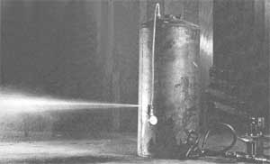

Mother's Hydrostatic Pressure Tank Tester
By the Mother Earth News editors
March/April 1978
One of the most overlooked sources of shop project raw material here in the U.S. and Canada is the friendly, neighborhood landfill or dump. And some of the most underrated items "free for the takin' " In most of those dumps are the hundreds of old electric water heaters that such scrap heaps always contain.
There are so many handy things that you can do around the farm, small family homestead, or even city or suburban house with old water heaters. And especially with the stripped-down, heavy-walled, sturdy pressure tanks that you'll find just inside each heater's lightweight sheet metal jacket and layer of insulation.
You can make the tanks into composters (MOTHER will feature several composters-from-recycled-materials In her next issue). Convert 'am Into rodent-proof storage containers for livestock feed. Add the necessary fittings to make a king-sized "air bomb" (high pressure air storage container) for your workshop. Or recycle one of the drums into a super-good-looking, super-efficient wood-burning stove (see "The Amazing S600 Wood-Buming Stove That You Can Build for $35 or Less!" In MOTHER NO. 49 and on page 28 of this Issue.)
One small word of caution, though, before you begin any of these-or other-projects: Don't try to make a silk purse out of a sow's ear. There are so many good tanks out there In the dump just waiting to be hauled off that there's no need to waste your time fiddling around with water heater tanks that are filled with corrosion or which have rusted through.
Now It's not too difficult to roll one of the heavy-walled drums around a time or two, turn it up or peer into one of its openings, and figure out whether or not the tank is filled with corrosion. Nor Is it any great trick to spot one of the containers that's really rusted out. The stumper is sorting the "perfect" tanks from the "almost perfects" . . . the "completely airtight" drum from the "completely airtight except for the poorly welded or rusted-out pinhole on one seam" container.
(For some recycling jobs, of course-say, the construction of a composter or livestock feed storage unit-there's no need to got so persnickety when "shopping" for raw materials down at the dump. For other projects, however-things like the airtight stove featured in MOTHER NO. 49 or a workshop air bomb-only "the best of the best" is good enough. In the first case-the stove-because of pride of craftsmanship as much as anything. And in the second-the air bomb-because you don't want an unexpected rupture of the pressurized tank to blow your head off someday.)
Well, relax. Here's an extremely simple hydrostatic pressure test stand that you can whip together in just a few minutes from odds and ends that you may already have lying around the shop.
The design philosophy of this little gem Is just about as basic as basic can be:[1] Dig a small "doesn't have to be too good as long as it'll work" hydraulic cylinder out of the back corner of the shop. [2] Fit the cylinder's ram with a handle mounted to a scrapped-together base (so when you work the handle, the cylinder will act as a powerful hydraulic pump). [3] Plumb the pump you've just built between two check valves as shown here, hook the "in" end of the assembly to a source of water, and-using pressure clamps-fasten the "out" end to a fitting on the tank you want to test. [4] Use any method you find convenient to plumb a hydraulic pressure gauge to another fitting on the tank ... and [5] pump away.
You'll be amazed at how easily you'll be able to pack pressure into the container with your little test stand ... especially if the cylinder you've modified has a bore of one inch or less. (in MOTHER's research shop-where the rig shown here was built-we just happened to have a two-inch-bore cylinder lying around, so we used it. And the setup, as you can see, works. It does take some muscle, though, to pump that handle once you've built up a pressure of 200 or so pounds.)
A good rule of thumb is to test any tank you intend to put to critical use-say, as an air bomb-to twice its standard working pressure. And a second good rule to follow is to limit one of the water heater tanks shown here to a working pressure of 125 pounds per square inch (psi). Which, of course, means that you'll be testing your tanks up to a pressure of 250 psi or slightly higher.
If the tank you're testing will take the pressure, you'll soon be absolutely certain of that fact. And if It won't? No problem. Unlike the dangerous "explosion" that results when a container of air under several hundred pounds of pressure ruptures, your water-filled tank will merely spring a leak (see photo) or-at worst split a few inches along its weak seam.
One final note: After you've certified a tank for 250 psi and you know It's positively safe to use the container as a 125 psi air bomb ... make sure that you limit the drum's standard working pressure to that level. How? By Installing a 125 psi pop-off valve on the tank, that's how. And by checking the valve from time to time to make sure it's functioning properly.
 Thar she blows! MOTHER's easily constructed, hand-operated hydrostatic pressure test stand finds the flaw in a defective water heater tank. The container can now be fixed with a spot weld ... or discarded in favor of a better tank. Note that while the modified hydraulic cylinder shown here (see text for details) is a double-acting model, only one of the unit's fittings is used in the test stand's plumbing (an elbow has been screwed into the other port, but it doesn't attach to anything nor is it plugged). In other words, a single-acting hydraulic cylinder is all you need for the guts of this highpressure test stand. |
 |
|